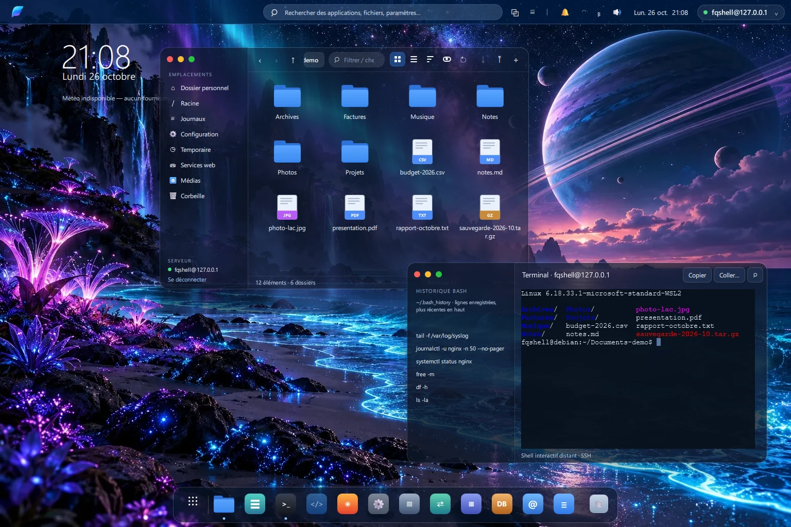

Bureau natif · Linux distant · SSH uniquement
Votre Linux.
Son propre bureau.
FORTIQ offre à votre serveur Debian ou Ubuntu un vrai bureau sur Windows et Android. Vos fichiers, vos outils et votre travail restent sur le serveur. L'application dessine seulement l'interface et lui parle en SSH.
Prototype d'ingénierie · Pas encore de téléchargement public

SSH est la seule route
Le client n'ouvre aucune connexion hormis SSH vers le serveur que vous choisissez. Rien d'autre ne quitte votre appareil.
Rien à installer sur le serveur
Pas d'agent, pas de démon, pas de bureau distant. FORTIQ pilote les outils Linux que vous avez déjà, comme journalctl, notmuch ou curl.
Chaque outil fonctionne sans IA
Les applications du quotidien se suffisent. Un assistant facultatif est prévu ; il n'est pas disponible aujourd'hui.
Applications
Tout ce que vous faites sur un serveur.
Enfin avec une porte d'entrée.
Chaque application est une interface graphique pour un outil Linux éprouvé, avec des erreurs claires quand une source est indisponible.
- Pris en charge
Fichiers
Parcourir, prévisualiser, envoyer et télécharger, renommer, rechercher, corbeille côté serveur et éditeur intégré. Les dossiers de dizaines de milliers d'éléments s'affichent page par page.
Limites Validation visuelle en attente.
- Pris en charge
Journaux
Lisez journald et /var/log, filtrez par période et gravité, suivez en direct, regroupez les événements répétés et inspectez un incident, sans IA.
Limites La corrélation est un premier jalon ; la spécification complète reste un objectif.
- Pris en charge
Terminal
Un vrai shell interactif par SSH avec émulation complète, historique des commandes et Ctrl+C qui fonctionne même sous un flux de sortie intense.
Limites Pas encore d'intégration tmux.
- Pris en charge
MDok
Un éditeur Markdown avec aperçu, recherche et remplacement, et brouillons conservés sur le serveur. Si le fichier a changé entre-temps, un écran de conflit montre la différence.
Limites Pas encore d'export PDF.
- Pris en charge
Système
Services, processus, interfaces réseau et disques d'un coup d'œil. Strictement en lecture seule : ni kill, ni redémarrage, aucune modification.
Limites Vue d'ensemble uniquement, par conception.
- Aperçu
Courrier
Lisez et étiquetez vos messages via notmuch sur le serveur, envoyez avec msmtp. FORTIQ ne parle jamais directement à votre fournisseur de messagerie.
Limites Exige notmuch, mbsync et msmtp configurés sur le serveur.
- Aperçu
Navigateur
Un lecteur web qui récupère les pages avec curl sur le serveur et les affiche en texte sûr. Les sites voient votre serveur, pas votre appareil.
Limites Ni JavaScript, ni styles, ni formulaires, ni cookies.
- Aperçu
Bases de données
Interrogez SQLite et PostgreSQL en lecture seule, avec limites de lignes et de durée, et annulation.
Limites La protection en lecture seule est un garde-fou, pas une frontière de sécurité.
« Pris en charge » signifie qu'il fait partie du contrat 1.0, avec un scénario de recette et des preuves automatisées. « Aperçu » signifie qu'il fonctionne dans les limites indiquées et reste présenté comme préliminaire. La qualification de la version est toujours en cours.
Fonctionnement
Le bureau ici.
Linux là-bas.
FORTIQ affiche en local et travaille à distance. Le serveur reste la source de vos fichiers et des calculs : une connexion lente ne déplace jamais vos données sur l'appareil.
Ajoutez votre serveur
Hôte, utilisateur, mot de passe ou clé. Les profils sont enregistrés sur votre appareil.
Vérifiez-le une fois
FORTIQ affiche l'empreinte de l'hôte et l'épingle avant l'envoi de tout identifiant.
Travaillez
Ouvrez Fichiers, Terminal, Journaux et le reste dans un seul bureau. Les sessions sont réutilisées, pas rouvertes.
État sincère
Tôt, et honnête là-dessus.
FORTIQ est un prototype d'ingénierie. Voici ce qui repose aujourd'hui sur des preuves et ce qu'il faut encore démontrer avant une version.
Vérifié à ce jour
- Compile sous Windows avec MSVC et Qt 6.12.
- Une suite SSH en direct de 57 tests réussit sur des serveurs Debian 13 jetables, dont deux indépendants.
- La version de débogage Android arm64 a passé les contrôles de connexion, de Fichiers et du sélecteur de stockage dans un émulateur.
Reste à démontrer
- Installation sur une machine Windows vierge, et un installateur signé (pas encore de certificat).
- Un appareil Android physique et un APK de version signé.
- Validation visuelle du bureau par rapport à la référence approuvée.
- Résultats d'une CI hébergée, et l'audit de pré-publication avant l'ouverture du code.
Voyez où nous en sommes.
État du téléchargement, prérequis et à quoi s'attendre des premières versions.
Télécharger et installer